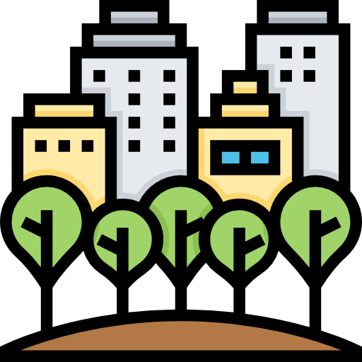

info@visitKakanj.ba
+387 32 874 108
A small town with a lot to offer!
Visit Kakanj and convince yourself that not only big cities are entertaining!
Kakanj is a municipality in BiH.

Located in the center of the country.

Number of residents: 37 441

Canton: Zeničko-dobojski

Municipality area: 462 km 2
Kraljeva Sutjeska is a Bosnian Franciscan monastery in Bosnia and Herzegovina. It includes a museum in which it houses historical treasures, a library which keeps rare and valuable historical records.
View more